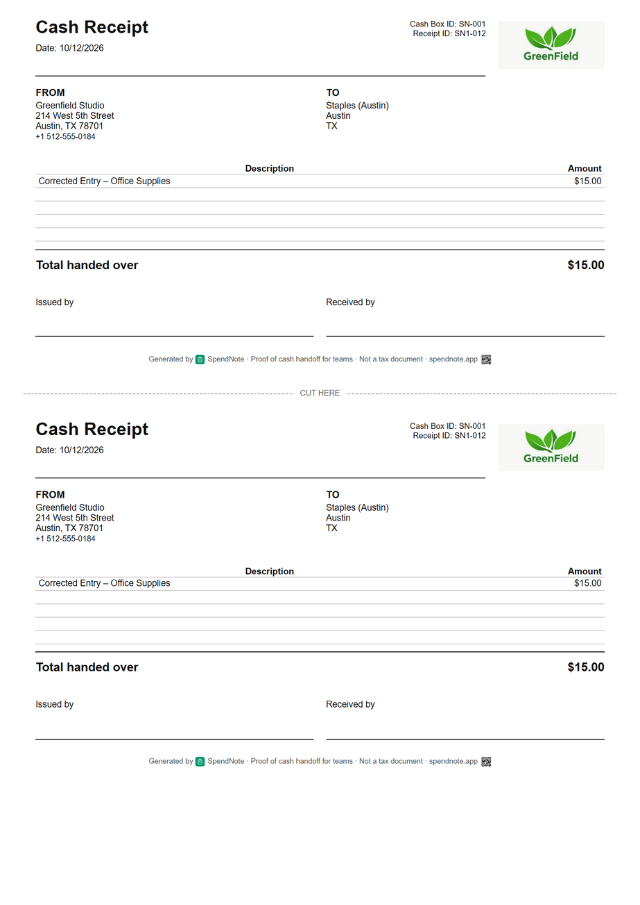

Payroll Cash Receipt
When a wage is paid in cash, both sides need a record of the moment money changed hands. SpendNote generates a simple, printable receipt for internal proof of the handover — not a payslip, not a tax document, just clear evidence that cash moved.

Make a cash wage receipt right now
Fill in the fields, then print two copies or save it as a PDF. Free, no account, nothing to install.
Read this first — what SpendNote does and does not do
SpendNote can help record that a cash payment was handed over and generate a basic receipt for internal proof. It is not payroll software, does not create payslips or statutory wage statements, and does not replace tax filings, employment records, or legal payroll documentation. Always use your payroll system, accountant, or local legal requirements for official wage and tax compliance.
What Is a Payroll Cash Receipt?
A payroll cash receipt — in the SpendNote sense — is a short internal document that captures one specific moment: an employer (or someone on their behalf) handed an employee an amount of cash, on a certain date, and both sides want a written acknowledgement of it.
That’s it. It is the same family of document as a cash handoff receipt or an employee cash advance receipt. The only thing that distinguishes a payroll cash receipt from a generic handoff receipt is the description on it: “wage payment for week of March 18”, instead of “office supplies” or “advance against next paycheck”.
It is not a payslip. It is not a wage statement. It is not a tax record. It is just proof that, at this moment, this amount of cash moved from this person to that person.
When You’d Actually Want One
This kind of receipt is useful in narrow, everyday situations — not as the formal way you pay wages.
Cash payment to household help
You pay a cleaner, gardener, or babysitter in cash on a recurring basis. Your accountant handles the formal side; you and the worker just want a paper trail of the amount and date for each handover.
Casual or day-rate worker on a small site
A small construction site or workshop pays a casual day-rate worker in cash at the end of the day. The site lead writes a quick receipt so both sides agree on what was paid before the worker leaves.
Small retail or hospitality team paid in cash for a one-off shift
An event, pop-up, or seasonal shift gets settled in cash on the night. The manager hands over the agreed amount and writes a receipt so the worker has proof and the office has a clean record for whoever runs payroll later.
Bridging a missed pay run
An employee can’t wait until the next pay date and asks for cash to cover a gap. The employer hands over a specific amount and notes that it relates to the upcoming wage. The actual payroll run still happens through the proper system — the receipt just documents the cash that already moved.
In every one of these cases, SpendNote is the handoff layer. The actual wage record, payslip, and tax compliance is handled separately, by whoever runs your payroll or your accountant.
What a Payroll Cash Receipt Should Include
Keep it minimal — it’s a handover receipt, not a payslip:
- Amount paid in cash — the exact figure that changed hands
- Date — when the cash was handed over
- Who paid — the employer, manager, or person handing over the cash
- Who received — the employee or worker name
- Short description — e.g. “wage payment for week of March 18” or “day-rate, March 22”
- Receipt number / unique ID — so the same receipt can be referenced later
What you should not put on a SpendNote receipt: gross pay, deductions, withholding, tax codes, social-security or insurance amounts, or anything that looks like a payslip breakdown. Those belong on the actual payslip from your payroll system.
What This Is NOT
This is the most important part of the page, so we’ll be blunt about it. A SpendNote payroll cash receipt is not any of the following:
Things this receipt is not
- Not a payslip. No gross pay, no net pay, no breakdown of deductions or withholding. A payslip is produced by your payroll system, not by SpendNote.
- Not a statutory wage statement. Many jurisdictions require employers to issue formal wage statements with specific information. This receipt does not satisfy that requirement.
- Not a tax document. SpendNote does not calculate tax, withholding, social security, or employer contributions, and the receipt is not a tax filing of any kind.
- Not a substitute for payroll software. SpendNote does not run payroll. It does not handle pay schedules, year-end reporting, or any payroll calculation.
- Not a legal employment record on its own. Whatever your local labour law requires (employment contracts, time records, pay records), those have to live in the proper systems, not in a handover receipt.
If any of the things in that list is what you actually need — you don’t need this page. You need a payroll system, an accountant, or a labour-law specialist for your jurisdiction.
How SpendNote Generates the Receipt
Step 1: Open SpendNote in your browser when you’re about to hand over the cash.
Step 2: Tap New transaction, set it as cash Out, enter the amount, select the employee as a contact, and add a short description (e.g. “wage payment for week of March 18”).
Step 3: Save. The receipt is generated instantly with a unique ID and the date/time. Print it (two copies on one page), download the PDF, or — on Pro — email a public PDF link to the recipient.

If you pay several workers this way, each one is saved as a contact, and you can pull up the full history per person at any time:

The Right Way to Combine This with Proper Payroll
Think of it as two layers, not one.
The handover layer — SpendNote. The moment cash moves, both sides agree on the amount and date, and a printable receipt is generated. Fast, simple, internal.
The payroll layer — your payroll system, accountant, or whatever your jurisdiction requires. Gross pay, deductions, taxes, contributions, payslips, year-end summaries, and statutory filings all live here. SpendNote does not touch this layer.
Both layers exist for a reason. The handover layer protects you in the moment — if a worker later says “I never got that cash”, you have a signed receipt with the date. The payroll layer protects you legally — tax compliance, employment records, statutory wage statements. One does not replace the other.
Document Every Cash Wage in Seconds
Quick internal receipt for any cash payment you hand to a worker — both sides keep a copy, alongside (not instead of) your payroll process. Free to start, no credit card.
Create Cash Wage ReceiptReminder: SpendNote receipts document the moment cash changed hands. They are not payslips, statutory wage statements, tax records, or legally compliant payroll documents. Always use your payroll system or accountant for official wage and tax compliance.
Frequently Asked Questions
Is a SpendNote payroll cash receipt the same as a payslip?
No. A SpendNote receipt only documents the moment cash was handed over — the amount, the date, who gave it, and who received it. A payslip is a separate, formal wage statement that breaks down gross pay, deductions, taxes, and net pay. The payslip is produced by your payroll system or accountant; the SpendNote receipt simply proves the cash moved between two people.
Can I use a payroll cash receipt instead of a payslip?
No. A SpendNote receipt is internal proof of a cash handover, not a substitute for payslips, statutory wage statements, tax records, or any official employment documentation required by law in your jurisdiction. You still need to issue payslips and run payroll through your usual payroll system or accountant.
When does a payroll cash receipt actually help?
It helps in everyday handover situations — for example, when a small business pays a casual worker in cash and both sides want a quick written record of the amount and date. It is the same kind of internal proof you’d use for a cash advance or a cash handoff between two staff members. The receipt sits alongside your real payroll records, not instead of them.
What information goes on a payroll cash receipt?
Just the handoff fields: amount paid in cash, date, who paid (employer or representative), who received (employee name), and a brief description (e.g. “wage payment, week of March 18”). It does not include gross pay, withholding, tax breakdowns, or any payroll calculations — those belong on the payslip from your payroll system.
Is this a legal or tax-compliant document?
No. SpendNote does not create legally compliant payroll documents and does not handle tax filings. The receipt is internal proof of a cash transfer between two people. Always use your payroll system, accountant, or local legal requirements for official wage records and tax compliance.
Try everything. Pay nothing for 14 days.
Then, if you love it
- Unlimited receipts and cash boxes
- Your logo on every receipt
- Print, PDF & CSV export
Every cash handoff, recorded and signed.
Set up in two minutes. First receipt in thirty seconds. Every entry saved and searchable.
Start my free trial